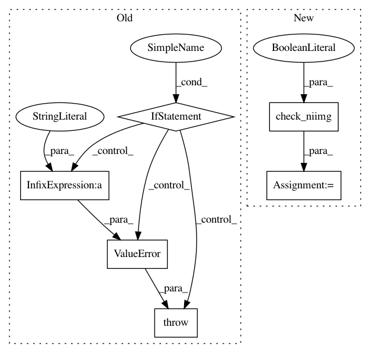

b7d99dc4d489ff2ec135606cbfa46ce0288fed21,nilearn/plotting/slicers.py,BaseSlicer,add_overlay,#BaseSlicer#Any#Any#Any#,303
Before Change
self._colorbar = colorbar
// deal with "fake" 4D images
if len(img.shape) > 3:
if len(img.shape) == 4 and img.shape[3] == 1:
data = img.get_data()
data = data[:,:,:,0]
img = nibabel.Nifti1Image(data, img.get_affine())
else:
raise ValueError("The provided volume has %d dimensions. Only" \
" three dimensional volumes volumes are " \
"supported."%len(data.shape))
if threshold is not None:
data = img.get_data()
if threshold == 0:
data = np.ma.masked_equal(data, 0, copy=False)
After Change
else:
self._colorbar = colorbar
img = _utils.check_niimg(img, ensure_3d=True)
if threshold is not None:
data = img.get_data()
if threshold == 0:
In pattern: SUPERPATTERN
Frequency: 3
Non-data size: 6
Instances
Project Name: nilearn/nilearn
Commit Name: b7d99dc4d489ff2ec135606cbfa46ce0288fed21
Time: 2014-07-02
Author: gael.varoquaux@normalesup.org
File Name: nilearn/plotting/slicers.py
Class Name: BaseSlicer
Method Name: add_overlay
Project Name: nilearn/nilearn
Commit Name: ac9dc4e11238a56688ea154f4b155f3b506a4c56
Time: 2018-07-17
Author: sylvain.lannuzel@student.ecp.fr
File Name: nilearn/masking.py
Class Name:
Method Name: compute_multi_gray_matter_mask
Project Name: nilearn/nilearn
Commit Name: b7d99dc4d489ff2ec135606cbfa46ce0288fed21
Time: 2014-07-02
Author: gael.varoquaux@normalesup.org
File Name: nilearn/plotting/slicers.py
Class Name: BaseSlicer
Method Name: init_with_figure